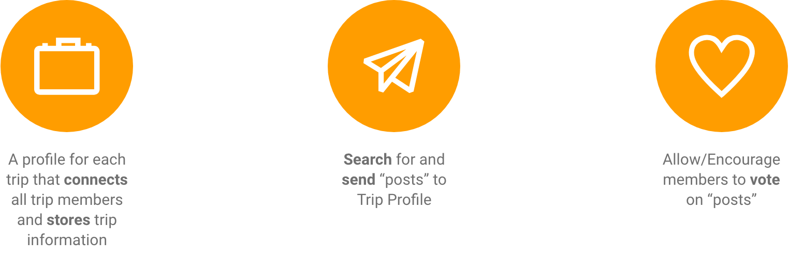
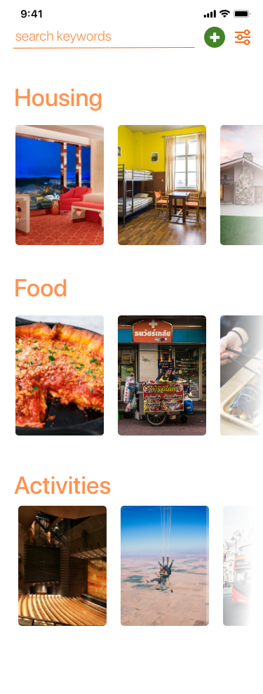
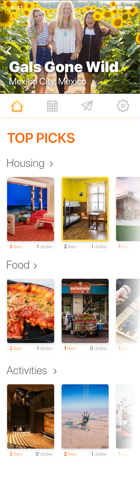

Travel Planning Mobile App Concept
TripJar, 2019

Overview
As an individual project, I researched and designed a mobile app that encourages group trip planning through private trip profiles and voting features.
Goal
- Create a private space that stores trip information and can be used for discussion
- Encourage group involvement by having members share and vote on trip ideas
- Include search capability for location-specific restaurants, housing, and activites
Constraints
- Individual project (one woman show)
- No funding
- 6 week project
My Role: UX/UI Designer
- Research & Testing: survey, in-person interviews, low to high-fidelity usability testing
- Analysis & Definition: SWOT, affinity diagram, empathy map, user persona, problem statement
- Design: user flows, user journey map, storyboard, wireframing, low to high-fielity prototyping


Approach
To find out about users' experiences with travel planning I conducted a survey and 5 in-person interviews with subjects that varied in age, income, and cultural group.
Survey Insights

Affinity Diagram & Empathy Map
With the data I had gathered from in-person interviews, I created an affinity diagram through which to seach for trends and an empathy map to help me dig deeper into the connection between my user's actions and emotions.


Insights from Affinity & Empathy Map


User Persona
Once my understanding of the user was deeper, I developed my proto persona into Sandy Lang. Ultimately Sandy just wants the whole family to enjoy their trip. However, adding trip planning to her busy schedule is stressful, especially when she is trying to do it all by herself.

Feature Prioritization
I brainstormed possibilities with the "I Like, I Wish, What If" method and then prioritized potential features with a MoSCoW chart. The app could have gone in many directions and I was interested in exploring those ideas, but with the time constraints of the project I could only focus on a few features.


MVP Features
A repeated sentiment from my survey and interview data was that users are planning trips with their trip companions in mind. However, they often use multiple apps to coordinate. I prioritized the features Trip Profile, Search function, and Voting function because these would provide a space and a way to conveniently coordinate planning together, to share ideas, get everyone's input, and store ideas.
Storyboard
Storyboarding helped me empathize not only with Sandy but with her kids, who are also living bustling lives. For TripJar to help a whole group plan together, it needs to appeal to audiences that differ in age, lifestyle, and tech-saviness.
User Journey Map
I noticed potential points of negative emotion when the user has to input information and points of positive emotion when the user finds an item, sends it to a trip and gets feedback. Some opportunities to improve the emotional experience are:
- Minimize the amount of information the user has to enter at one time (ex. sign in)
- Make trip profile building fun, perhaps with personalized touches (ex. let user choose the banner image for a trip)
- Give positive feedback for cooperative actions (ex. sending item to trip, receiving notification of group voting)
User Flows
I created flows based on my MVP features, aiming to keep the flows simple while giving the user ample options (ex. where to vote, where to send an item).

SWOT Analysis
I conducted a SWOT analysis to consider what TripJar brings to the table:
- Strengths: simplicity; encourages cooperation through voting; utilizes behaviors of social media apps
- Threats: myriad other travel planning apps with powerful search capabilities; another program could add on voting to their features
Sketching & Wireframing
I'm quick with pen and paper, so I started by churning out sketches and trying out ideas before going into XD.


Low-Fi Usability Testing Feedback
- Most users did not associate the heart icon with voting. Multiple users reccomended signifying voting with a thumbs up/down or a checkmark/"x".
- Half of users thought the plane icon signified transportation, not Trip Profile
- A third of users wanted a map option on the item detail page
Check out the full lo-fi prototype:
High-Fi Testing Feedback
Search Home
Trip Profile
- Many users did not understand the difference between the "Top Picks" section of the individual trip profile from the categories of Search Home. [Differentiate "Top Picks" and "Search Home"]
- A few users couldn't find the back button on individual trip profile because it blended into the banner image. [Make back button on trip profile visible no matter what the banner image may be]
- A few users did not know what activites they were clicking on when they searched, becuase the items were not labeled. [Label search items]
Implementation
Along with expanding the presence of the primary navigation, here are some ways the user feedback was implemented in the final prototype.

Check out the full prototype:
Takeaways
- Contrary to what I would like to believe, I do not intuitively know everything about the user. My low-fi usability tests were a humbling and enlightening experience. I learned that people do not associate icons with the same things as me, and even a misleading icon can throw off a user's whole interaction with the app. What seems so obvious to me, the designer, might only be obvious because I built it.
- Repetition is not only unavoidable, but necessary in pushing and developing the design.
- Through this process I was reminded to not be intimidated by new challenges or be afraid to ask for help or guidance. There is so much to learn as a budding designer, but people are kind and there are awesome resources everywhere.